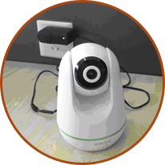

步骤一:检查设备
连接设备电源保证设备绿灯常量，并且在设备附近执行添加操作。
步骤二:扫二维码
- 点击APP主页右上角的“+”进入扫描设备号页面。
- 将设备底部的二维码置于手机矩形框内，系统会自动识别。
步骤三:添加设备
- 新设备会在配置完WiFi后自动绑定到您的账户。
- 已经被他人绑定的设备会提示你请求授权。
步骤四:配置WiFi
- 在WiFi配置过程中，您需要保持无线路由网络可用。
- 配置过程大概需要30-60秒，试网络环境决定。
- 等待摄像头底部WiFi指示灯为绿色常亮后，表示网络配置成功。
- 配置成功后自动跳转至设备列表页面。